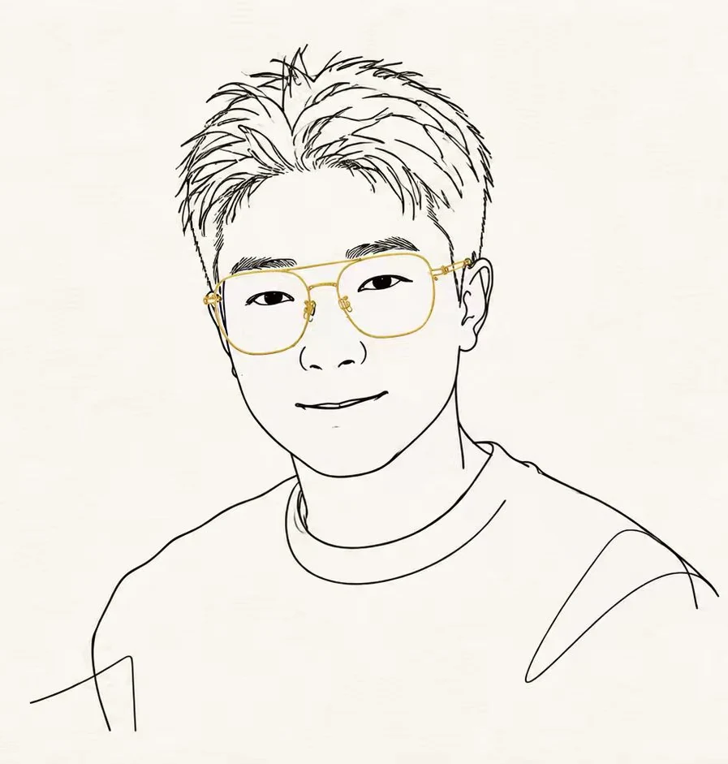

AI 工具 · 开源探索
TrendRadarORBIT
让信息从无序的流动中，逐渐显现轮廓。
基于 TrendRadar 热点信息助手的 ORBIT 3D 相关探索。关注信息聚合、阅读效率与可视化呈现之间的关系。
TrendRadarORBIT 3D信息聚合
DESIGNED FOR CURIOSITY ↗
我相信技术最终要回到生活。这里收藏我的作品、文章，以及那些值得认真思考的小问题。

我想做的，不只是追赶技术。
而是把它带回真实世界。
不为展示技术而展示技术。每一个项目，都是一次对真实问题的回应。
让信息从无序的流动中，逐渐显现轮廓。
基于 TrendRadar 热点信息助手的 ORBIT 3D 相关探索。关注信息聚合、阅读效率与可视化呈现之间的关系。
AI、工作、阅读与生活。写下的不是标准答案，而是思考留下的痕迹。
从交通运输到 AI 应用开发，路径不是预先画好的；愿意迈出下一步，才让它慢慢清晰。
一个好用的 AI 应用，也许应该从一个非常普通的问题开始。
读书、学习和动手实践，最好形成一个小小的循环。
一名从交通运输领域跨界而来的 AI 应用开发者，也是一个持续学习、写作和动手做东西的人。
我曾在传统岗位工作，后来从文员转向算法工程师，再走进 AI 应用开发。如今专注于办公和工业场景中的 AI 工具、智能体与小型应用，把抽象技术变成实际可用的解决方案。
工作之外，我喜欢阅读、表达，也尝试用短视频分享 AI 时代里普通人的学习、工作和生活。
GOOD THINGS OFTEN BEGIN WITH A CONVERSATION
聊聊一个想法、一项合作，或者一本最近读过的书。
WECHAT / zheng25360 LET'S MAKE SOMETHING REAL.